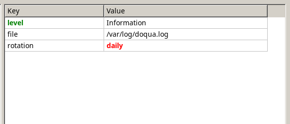

API reference › Doqua.Controls
Table class
public class Table : ControlGrid of text cells with a header row, in the classic style. Table.Columns define the headers and widths; Table.Rows hold the cells (see also Table.SetData and Table.AddRow). Every cell uses the table's Table.Font and Table.Color unless its own are set. Drag a header border to resize a column, double-click it to fit the column to its contents. Scroll bars appear when the cells do not fit; the mouse wheel scrolls (Shift+wheel horizontally).
With Table.RowSelection, a click selects a row (Table.SelectedIndex) and the table takes the keyboard focus: Up / Down, PageUp / PageDown and Home / End move the selection, and Enter or a double click raise Table.RowActivated (e.g. to edit the row).

Constructors
| Table() | Creates an empty table, 300 x 200 pixels. |
Table()
public Table()Creates an empty table, 300 x 200 pixels.
Properties
| Background | Background of the cells. |
| Color | Default text color of the cells. |
| Columns | The columns, left to right. |
| DisabledColor | Text color while disabled. |
| Font | Default font of the cells and the font of the headers. |
| GridColor | Color of the grid lines. |
| HeaderColor | Text color of the headers. |
| InactiveSelectionBackground | Background of the selected row while the table does not have the focus (cells keep their colors). |
| this[int, int] | The cell at (row, column); missing cells of a short row are created empty. |
| Rows | The rows, top to bottom. |
| RowSelection | When true, the table has a selected row (Table.SelectedIndex), can take the keyboard focus and moves the selection with the arrow keys. False by default. Turning it off clears the selection. |
| SelectedIndex | Index of the selected row, or -1 for none. Setting it (needs Table.RowSelection for anything but -1) scrolls the row into view. The selection stays on the same row when rows are inserted or removed before it. |
| SelectedRow | The selected row, or null. |
| SelectionBackground | Background of the selected row while the table has the focus. |
| SelectionColor | Text color of the selected row while the table has the focus (cells' own colors are not used then). |
Background
public Color Background { get; set; }Background of the cells.
Color
public Color Color { get; set; }Default text color of the cells.
Columns
public TableColumnCollection Columns { get; }The columns, left to right.
DisabledColor
public Color DisabledColor { get; set; }Text color while disabled.
Font
public Font Font { get; set; }Default font of the cells and the font of the headers.
GridColor
public Color GridColor { get; set; }Color of the grid lines.
HeaderColor
public Color HeaderColor { get; set; }Text color of the headers.
InactiveSelectionBackground
public Color InactiveSelectionBackground { get; set; }Background of the selected row while the table does not have the focus (cells keep their colors).
this[int, int]
public TableCell this[int row, int column] { get; }The cell at (row, column); missing cells of a short row are created empty.
Rows
public TableRowCollection Rows { get; }The rows, top to bottom.
RowSelection
public bool RowSelection { get; set; }When true, the table has a selected row (Table.SelectedIndex), can take the keyboard focus and moves the selection with the arrow keys. False by default. Turning it off clears the selection.
SelectedIndex
public int SelectedIndex { get; set; }Index of the selected row, or -1 for none. Setting it (needs Table.RowSelection for anything but -1) scrolls the row into view. The selection stays on the same row when rows are inserted or removed before it.
SelectedRow
public TableRow? SelectedRow { get; }The selected row, or null.
SelectionBackground
public Color SelectionBackground { get; set; }Background of the selected row while the table has the focus.
SelectionColor
public Color SelectionColor { get; set; }Text color of the selected row while the table has the focus (cells' own colors are not used then).
Methods
| AddRow(string[]) | Adds a row with these cell texts and returns it. |
| CellAt(int, int) | Cell under the point (in the table's coordinates), or null outside the cells. |
| FitColumn(int) | Makes column as wide as its header and its widest cell. |
| GetContextMenu() protected | The context menu for the cell under the last right-button press, decided by Table.ContextMenuOpening. |
| GetCursor(int, int) protected | The resize cursor over a header border, and while a column is being resized. |
| OnCellClick(TableCellEventArgs) protected | |
| OnCellRightClick(TableCellEventArgs) protected | |
| OnContextMenuOpening(TableContextMenuEventArgs) protected | |
| OnGotFocus(EventArgs) protected | |
| OnKeyDown(KeyEventArgs) protected | With Table.RowSelection: arrows, PageUp / PageDown and Home / End select; Enter activates. |
| OnLostFocus(EventArgs) protected | |
| OnMouseClick(MouseEventArgs) protected | |
| OnMouseDown(MouseEventArgs) protected | |
| OnMouseMove(MouseMoveEventArgs) protected | |
| OnMouseUp(MouseEventArgs) protected | |
| OnMouseWheel(MouseWheelEventArgs) protected | |
| OnRender(DrawingContext) protected | Draws this control's own content. (0, 0) is the control's top-left corner and drawing is clipped to its bounds. Children are drawn by the framework afterwards, on top. |
| OnRowActivated(TableRowEventArgs) protected | |
| OnSelectionChanged(EventArgs) protected | |
| ScrollToRow(int) | Scrolls vertically so that row is visible. |
| SetData(string[,]) | Replaces all rows with the texts of data ([row, column]). |
AddRow(string[])
public TableRow AddRow(params string[] texts)Adds a row with these cell texts and returns it.
CellAt(int, int)
public (int, int)? CellAt(int x, int y)Cell under the point (in the table's coordinates), or null outside the cells.
FitColumn(int)
public void FitColumn(int column)Makes column as wide as its header and its widest cell.
GetContextMenu()
protected override PopupMenu? GetContextMenu()The context menu for the cell under the last right-button press, decided by Table.ContextMenuOpening.
GetCursor(int, int)
protected override Cursor GetCursor(int x, int y)The resize cursor over a header border, and while a column is being resized.
OnCellClick(TableCellEventArgs)
protected virtual void OnCellClick(TableCellEventArgs e)OnCellRightClick(TableCellEventArgs)
protected virtual void OnCellRightClick(TableCellEventArgs e)OnContextMenuOpening(TableContextMenuEventArgs)
protected virtual void OnContextMenuOpening(TableContextMenuEventArgs e)OnGotFocus(EventArgs)
protected override void OnGotFocus(EventArgs e)OnKeyDown(KeyEventArgs)
protected override void OnKeyDown(KeyEventArgs e)With Table.RowSelection: arrows, PageUp / PageDown and Home / End select; Enter activates.
OnLostFocus(EventArgs)
protected override void OnLostFocus(EventArgs e)OnMouseClick(MouseEventArgs)
protected override void OnMouseClick(MouseEventArgs e)OnMouseDown(MouseEventArgs)
protected override void OnMouseDown(MouseEventArgs e)OnMouseMove(MouseMoveEventArgs)
protected override void OnMouseMove(MouseMoveEventArgs e)OnMouseUp(MouseEventArgs)
protected override void OnMouseUp(MouseEventArgs e)OnMouseWheel(MouseWheelEventArgs)
protected override void OnMouseWheel(MouseWheelEventArgs e)OnRender(DrawingContext)
protected override void OnRender(DrawingContext dc)Draws this control's own content. (0, 0) is the control's top-left corner and drawing is clipped to its bounds. Children are drawn by the framework afterwards, on top.
OnRowActivated(TableRowEventArgs)
protected virtual void OnRowActivated(TableRowEventArgs e)OnSelectionChanged(EventArgs)
protected virtual void OnSelectionChanged(EventArgs e)ScrollToRow(int)
public void ScrollToRow(int row)Scrolls vertically so that row is visible.
SetData(string[,])
public void SetData(string[,] data)Replaces all rows with the texts of data ([row, column]).
Events
| CellClick | Raised on a left click; the indexes are null outside the cells (header, empty area). |
| CellRightClick | Raised on a right click; the indexes are null outside the cells. The context menu opens after it. |
| ContextMenuOpening | Raised before the context menu opens (right click, or Shift+F10 with no cell). Set TableContextMenuEventArgs.Menu to the menu to show (it starts as Control.ContextMenu), or to null for none. |
| RowActivated | Raised when a row is double-clicked, or when Enter is pressed on the selected row (which needs Table.RowSelection). |
| SelectionChanged | Raised after Table.SelectedIndex changes: by a click, a key, code, or because the selected row was removed. |
CellClick
public event EventHandler<TableCellEventArgs>? CellClickRaised on a left click; the indexes are null outside the cells (header, empty area).
CellRightClick
public event EventHandler<TableCellEventArgs>? CellRightClickRaised on a right click; the indexes are null outside the cells. The context menu opens after it.
ContextMenuOpening
public event EventHandler<TableContextMenuEventArgs>? ContextMenuOpeningRaised before the context menu opens (right click, or Shift+F10 with no cell). Set TableContextMenuEventArgs.Menu to the menu to show (it starts as Control.ContextMenu), or to null for none.
RowActivated
public event EventHandler<TableRowEventArgs>? RowActivatedRaised when a row is double-clicked, or when Enter is pressed on the selected row (which needs Table.RowSelection).
SelectionChanged
public event EventHandler? SelectionChangedRaised after Table.SelectedIndex changes: by a click, a key, code, or because the selected row was removed.
Inherited members
From Control: Anchor, Bounds, CanFocus, ContextMenu, Cursor, Enabled, EnabledChanged, Focus, Focusable, Focused, GotFocus, Height, Invalidate, IsEffectivelyEnabled, IsEffectivelyVisible, IsMouseOver, IsTabStop, KeyDown, LostFocus, MouseClick, MouseDown, MouseEnter, MouseLeave, MouseMove, MouseUp, MouseWheel, Name, OnEnabledChanged, OnMouseEnter, OnMouseLeave, OnSizeChanged, OnTextInput, OnVisibleChanged, Parent, SizeChanged, TextInput, Visible, VisibleChanged, VisualChildren, Width, X, Y